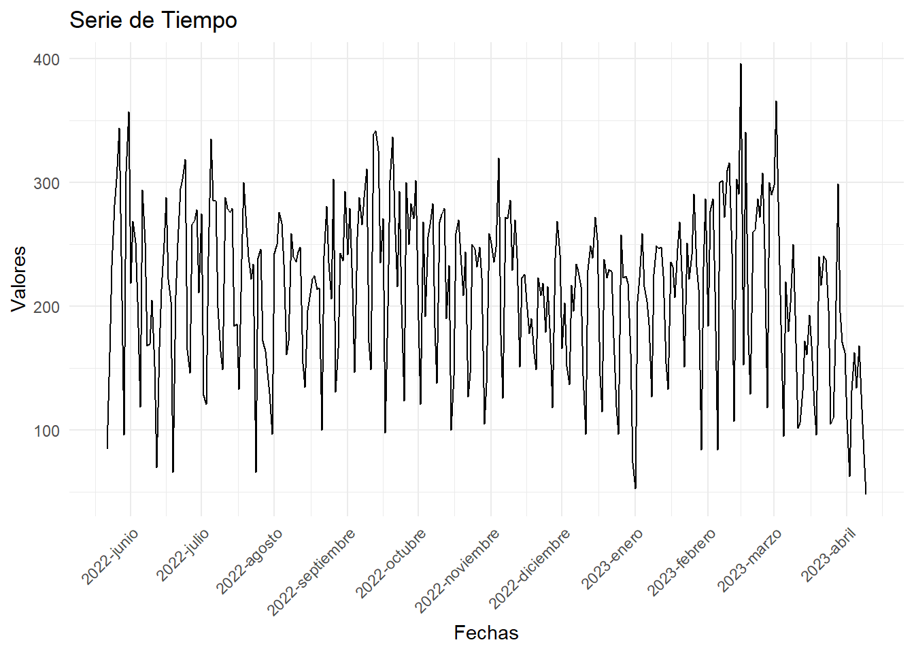
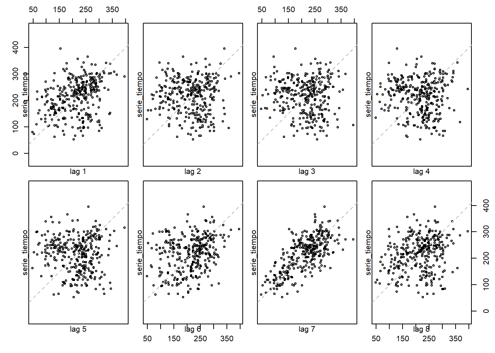
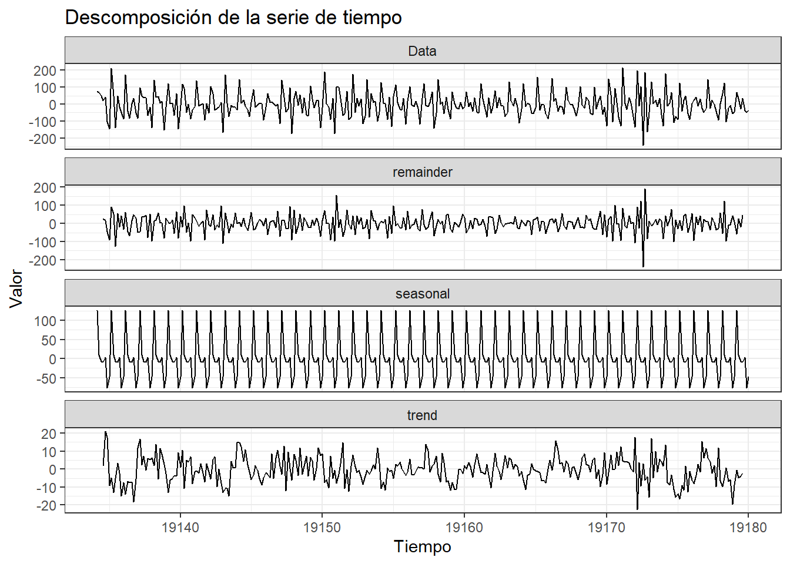

Capítulo 3 Análisis de descriptivo y transformaciones
3.1 Visualización Inicial
La serie de tiempo a analizar muestra el volumen de llamadas que ingresan diariamente en una linea telefónica; demos una primera visualización a la serie de tiempo que se analizará:
library(ggplot2)
ggplot(datos, aes(x = Date, y = Volume)) +
geom_line() +
labs(x = "Fechas", y = "Valores", title = "Serie de Tiempo")+
scale_x_date(date_breaks = "1 month", date_labels = "%Y-%B")+
theme_minimal() +
theme(axis.text.x = element_text(angle = 45, hjust = 1))
De forma general podemos ver que la serie de tiempo muestra un comportamiento estacional, sin una clara tendencia. No se evidencian valores atípicos significativos, pero estos se validaran próximamente.
3.2 Parametros de la seire de tiempo
Exploremos el tipo de dato y la ventana de tiempo en la que se presenta esta serie:
min_date <- min(datos$Date)
max_date <- max(datos$Date)
tipo_dato <- class(serie_tiempo)
print(paste("Mínimo día:", min_date))## [1] "Mínimo día: 2022-05-22"## [1] "Máximo día: 2023-04-09"## [1] "Tipo de dato: ts"Confirmamos que la serie de tiempo quedo en el formato correcto “ts” y que esta trae datos desde el 22 de mayo del 2022 hasta el 9 de abril del 2023.
En este apartado haremos un análisis descriptivo de la serie de tiempo, exploraremos sus componentes y aplicaremos alguna transformación en caso de esta sea requerida.
3.3 Descomponsición de la serie
Iniciemos descomponiendo la serie de tiempo de forma aditiva, dado que la amplitud de las estacionalidades se mantiene en el tiempo,no se considera la descomposición multiplicativa.
library(ggplot2)
library(ggfortify)
# Descomposición de la serie de tiempo
fit <- decompose(serie_tiempo, type='additive')
autoplot(fit)+
labs(title = "Descomposición de la serie de tiempo",
x = "Tiempo",
y = "Valor",
colour = "Gears")+
theme_bw()## Warning: Removed 12 rows containing missing values (`geom_line()`).De forma general podemos ver que no hay una clara tendencia, aunque por ventanas de tiempo si se logra mantener una tendencia al alza o a la baja. La serie presenta una fuerte estacionalidad, la cual es homogenea para todo el periodo analizado. Los residuos presentan un buen comportamiento, están centrados en cero y no tienen un patron marcado, se pueden considerar aleatorios.
3.4 Analisis de Tendencia
Dado que la existencia de tendencia en la serie no es muy clara, se ejecutara el test Kendall para definir si existe o no tendencia en la serie analizada:
Ho: La serie no tiene tendencia H1: La serie si presenta tendencia
## Score = -5464 , Var(Score) = 3761233
## denominator = 51884.36
## tau = -0.105, 2-sided pvalue =0.0048495A un nivel de significancia del 0.05 se concluye que hay evidencia suficiente para soportar que la serie si presenta tendencia.
3.5 Analisis de Estacionalidad
La estacionalidad de esta serie es bastante clara, pero podemos tener mayor detalle de esta analizando las gráficas ACF y PACF.
La gráfica de ACF y PACF muestran la correlación entre una serie de tiempo y sus valores rezagados, pero la gráfica PACF elimina la influencia de los rezagos intermedios. En otras palabras, muestra la correlación directa entre dos puntos en el tiempo después de eliminar la correlación indirecta a través de otros rezagos.

Por la forma en que se presentan los rezagos en la gráfica ACF se puede evidenciar que si existe una un patrón en la serie de tiempo de de 7 tiempos. Esto tiene sentido dado que la periodicidad del proceso analizado es semanal.
3.6 Análisis de estacionariedad
Una serie de tiempo se considera estacionaria cuando sus propiedades estadísticas se mantienen constantes a lo largo del tiempo, lo que significa que no muestra cambios sistemáticos en su media, varianza y autocorrelación a medida que avanza el tiempo. En términos más simples, una serie de tiempo estacionaria es una serie en la que los patrones y características se repiten de manera consistente en diferentes períodos.
Se utilizara el test ADF para probar si existe estacionariedad en la serie estudiada:
Ho: La serie es no estacionaria: tiene raíz unitaria H1: La serie es estacionaria: no tiene raíz unitaria
## Registered S3 method overwritten by 'quantmod':
## method from
## as.zoo.data.frame zoo##
## Augmented Dickey-Fuller Test
##
## data: serie_tiempo
## Dickey-Fuller = -1.8044, Lag order = 6, p-value = 0.659
## alternative hypothesis: stationaryCon un nivel de significance de 0.05 se concluye que no hay evidencia sufifiencte para decir que la serie es estacionaria, esto resultado es coherente con el test de tendencia el cual mostró que la serie efectivamente si presenta una tendencia en el tiempo.
3.6.1 Análisis de rezagos
El análisis de rezagos se utiliza para ver la correlación que existe entre los valores y el n valor rezagado; analicemos la relación que existe entre cada valor y sus primeros 8 rezagos, considero que los primeros 8 son suficiente dado que se esperaría ver una relación de los días de la semana entre sí, Osea lunes-lunes, martes-martes… etc.

La gráfica de ACF muestra la correlación entre una serie de tiempo y sus valores rezagados (anteriores) en diferentes intervalos de tiempo. Cada barra en la gráfica representa la correlación en un rezago específico.
Como era de esperarse, se evidencia un patrón claro en el lag 7, esto significa que hay una alta correlación entre la serie y 7 rezagos.
3.7 Tranformación (Diferenciación)
Dado que la serie presenta tendencia, se debe intentará quitar esta tendencia con el metodo de defierenciación.
Analicemos la serie transformada
library(ggplot2)
library(ggfortify)
# Descomposición de la serie de tiempo
fit <- decompose(seriedf1, type='additive')
autoplot(fit)+
labs(title = "Descomposición de la serie de tiempo",
x = "Tiempo",
y = "Valor",
colour = "Gears")+
theme_bw()## Warning: Removed 12 rows containing missing values (`geom_line()`).
Efectivamente se redujo la tendencia en la serie de tiempo, sobre todo en los últimos meses de el expectro analizado, originalmente este tenia una tendencia a la baja y ahora se ve mucho mas suavizado.
Confirmemos la no existencia de tendencia ejecutando nuevamente el test ADF
Ho: La serie es no estacionaria: tiene raíz unitaria H1: La serie es estacionaria: no tiene raíz unitaria
## Warning in adf.test(seriedf1): p-value smaller than printed p-value##
## Augmented Dickey-Fuller Test
##
## data: seriedf1
## Dickey-Fuller = -12.545, Lag order = 6, p-value = 0.01
## alternative hypothesis: stationaryA un nivel de significancia del 0.05 podemos concluir que hay evidencia suficiente para decir que la serie es estacionaria por lo que se confirma la eliminación de la tendencia.